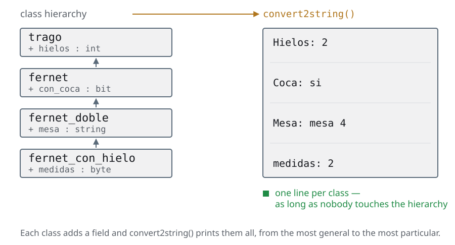
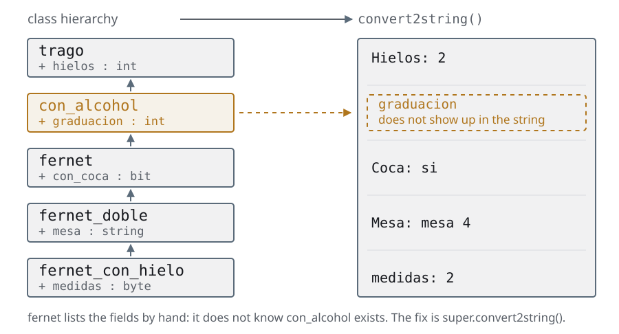

Day 5The data
The same slides as the deck, with the instructor notes inside the text and the complete code. If you are taking the course on your own, start here and keep the deck alongside for the reviews.
Agenda
Day 5 · ≈ 4 h · unit 6 · the data
- Copying an object that contains another
- Transactions
- Constrained random
Copying an object that contains another
The handle is not the object
- From the transactions on, the testbench data stops being a
structand becomes objects that travel: the monitor creates them, the scoreboard compares them - And there a problem appears that a
structdid not have. Astructgets copied when you assign it; an object does not:obj1_h = obj2_hcopies the handle, not the data - Which means two parts of the testbench can be looking at the same object without knowing it. If one modifies it, the other sees the change halfway through
- Copying it for real has to be written, and written at every level of the hierarchy, or the fields from above get lost in silence
- This section is the OOP that is missing so that the transactions can be copied, compared and printed without lying
It is an OOP section in the middle of UVM, and it is worth saying why it is here
and not on day 2: because only now is it needed. Up to reporting —the closing of
day 3— the data was a struct and copied itself.
The bug in the second bullet gets written by everybody once, and the symptom is
horrible: you send a transaction to the scoreboard, you go on using the same
handle for the next one, you modify it, and the scoreboard compares against data
that changed after it received it. It does not fail every time, and when it does
it looks like a DUT bug.
The other half —the super at every level— has a different and more treacherous
symptom: the day somebody puts a new class in the middle of the hierarchy, the
convert2string() stops printing half the fields and nobody finds out,
because it goes on printing something.
The question to start with: if handle_a = handle_b, how many objects are there?
One. It is the same question as in classes and extensions, now with consequences.
Copying an object that contains another
Never duplicate code
"If we find ourselves copying code and making small modifications to it inside our program, we are doing things wrong. Code must never be duplicated."
In OOP, instead of copying code...
we extend classes
Copying an object that contains another
convert2string(): the problem

- The hierarchy goes from the general to the particular, and each class adds fields of its own
- We want two things from it: to be able to copy a whole object and to print it whole, without anything from the levels above getting lost
- This first version works. Count how many times the name of a field of the base class shows up
code/u6/jerarquias/pre_convert2string.sv// Wrong Way de hacer convert2string!
//class trago;
virtual function string convert2string();
return $sformatf("Hielos: %0d", hielos);
endfunction : convert2string
//class fernet extends trago;
function string convert2string();
string coca_s;
coca_s = (con_coca) ? "si" : "no";
return $sformatf("Hielos: %0d Coca: %s", hielos, coca_s);
endfunction : convert2string
//class fernet_doble extends fernet;
function string convert2string();
return {$sformatf("hielos: %0d coca: %0b mesa: %s",
hielos, con_coca, mesa) };
endfunction : convert2stringThis version works, and that is the problem: it looks fine and it is wrong. Every
convert2string() prints every field by hand, including the ones it inherited.
Go to the $sformatf of the bottom-most class and count how many times the name
of a field of the class above is repeated. Every one of those repetitions is a
line you have to remember to touch the day a field gets added.
The question that sets up the next slide: what happens if tomorrow somebody puts
a new class in the middle of the hierarchy? The ones below go on printing
what they knew, the one in the middle does not show up, and there is no error.
The method still returns a string.
Copying an object that contains another
convert2string(): the deep version

- The day somebody puts a class in the middle, the ones below go on printing what they knew and the one in the middle does not show up. And there is no error: the method still returns a string
- The rule that fixes it: each class prints only what is its own and asks
superfor the rest - Nobody knows what is further up, so inserting a level breaks nothing
code/u6/jerarquias/pre_convert2string_ok.sv//virtual class trago;
virtual function string convert2string();
return $sformatf("Hielos: %0d", hielos);
endfunction : convert2string
//class con_alcohol extends trago;
function string convert2string();
return {super.convert2string(),
$sformatf("\ngraduacion: %0d",graduacion)};
endfunction : convert2string
//class fernet extends con_alcohol;
function string convert2string();
string coca_s;
coca_s = (con_coca) ? "si" : "no";
return {super.convert2string(), "\nCoca: ",coca_s};
endfunction : convert2stringThe rule, short: every method of the hierarchy takes care only of its own
fields and asks super for the rest. Nobody knows what is further up, and that
is why inserting a class in the middle breaks nothing.
The pattern repeats in the same way in the three methods of the section
—convert2string(), do_copy(), do_compare()— and in the three of UVM too. If
you get into the habit of writing the call to super first, before touching
your own fields, you never forget it.
It is worth pointing out the parallel with something they have already seen: it
is exactly the same argument as the super.new() of classes and extensions. The
top part of the object has to be built too — and it also has to be printed,
copied and compared.
Copying an object that contains another
The equals sign copies nothing
obj1_h = obj2_hcopies nothing: it leaves two handles pointing at the same object- If you modify it through one, the other sees it. There is no notice, there is no warning
- With a
structthat did not happen: it gets copied when you assign it. It is the difference to keep in mind from here to the end of the course
It copies the handle, not the object. It is the bug everybody writes once: you modify the transaction you already sent to the scoreboard and the scoreboard sees the change halfway through. This is where the clone() of the transactions comes from.
Copying an object that contains another
Copying for real is two steps
Copying for real is two steps, and they have to be written: instantiate a new object and hand it the data field by field
code/u6/jerarquias/pre_copy.svinitial begin
fernet_hielo1_h =
new(.hielos(2), .con_coca(1), .graduacion(2), .mesa("mesa 4"), .medidas(2));
$display("\n--- Fernet 1 ---\n", fernet_hielo1_h.convert2string());
fernet_hielo2_h = new();
$display("\n--- Fernet 2 before the copy ---\n", fernet_hielo2_h.convert2string());
// do_copy is a method that copies member by member
// it suffers from the same problem already seen with convert2string()
// Each class can copy the variables defined in that class
// super.do_copy() has to be used to copy the inherited ones
fernet_hielo2_h.do_copy(fernet_hielo1_h);
$display("\n--- Fernet 2 after the copy ---\n", fernet_hielo2_h.convert2string());
end- The
new()is the first step and it is not optional: without a new object on the other side, there is nowhere to copy to - The second step is by hand, field by field. SystemVerilog has no built-in deep copy
- And field by field means the fields of the classes above too, which is exactly what gets forgotten
It is worth making the comparison with the assignment of the previous slide out
loud: a = b is one line and copies nothing; copying for real is two steps and
both have to be remembered.
That the language does not bring a deep copy is not an oversight by the
committee: there is no general answer. If the class has a handle to another
object, do you copy the handle or the object? It depends, and that is why you
have to decide it yourself in every do_copy().
It is exactly the same dilemma the transactions are going to have if some day
they carry an array of objects inside. In this course it does not happen, but it
is worth leaving the question on the table.
Copying an object that contains another
do_copy(): each class touches what is its own
do_copy(): Every class in the hierarchy has to call its parent class, and therefore every do_copy() method needs the same type of argument. But we have different classes... We use polymorphism
code/u6/jerarquias/pre_copy2.sv · #fernet_con_hieloclass fernet_con_hielo extends fernet_doble;
byte medidas;
function new(int hielos = 0, bit con_coca = 0, int graduacion = 0,
string mesa = "", byte medidas = 0);
super.new(hielos, graduacion, con_coca, mesa);
this.medidas = medidas;
endfunction : new
function string convert2string();
return {super.convert2string(), "\n", $sformatf("medidas: %0d", medidas)};
endfunction : convert2string
//do_copy passes the argument up to its parent class
function void do_copy(trago copia);
fernet_con_hielo copia_fernet_con_hielo;
super.do_copy(copia);
// Then the copy gets cast to a variable of its own class type
$cast(copia_fernet_con_hielo, copia);
this.medidas = copia_fernet_con_hielo.medidas;
endfunction : do_copy
endclass : fernet_con_hieloel archivo entero, 46 líneas
class fernet_doble extends fernet;
string mesa;
function new(int hielos = 0, int graduacion = 0, bit con_coca = 0,
string mesa = "");
super.new(hielos, graduacion, con_coca);
this.mesa = mesa;
endfunction : new
function string convert2string();
return {super.convert2string(), "\nMesa: ", mesa};
endfunction : convert2string
// Polymorphism: do_copy takes a class derived from trago as its argument
// so the trago class is what gets used as the argument type
function void do_copy(trago copia);
fernet_doble copia_fernet_doble;
super.do_copy(copia);
$cast(copia_fernet_doble, copia);
this.mesa = copia_fernet_doble.mesa;
endfunction : do_copy
endclass : fernet_doble
class fernet_con_hielo extends fernet_doble;
byte medidas;
function new(int hielos = 0, bit con_coca = 0, int graduacion = 0,
string mesa = "", byte medidas = 0);
super.new(hielos, graduacion, con_coca, mesa);
this.medidas = medidas;
endfunction : new
function string convert2string();
return {super.convert2string(), "\n", $sformatf("medidas: %0d", medidas)};
endfunction : convert2string
//do_copy passes the argument up to its parent class
function void do_copy(trago copia);
fernet_con_hielo copia_fernet_con_hielo;
super.do_copy(copia);
// Then the copy gets cast to a variable of its own class type
$cast(copia_fernet_con_hielo, copia);
this.medidas = copia_fernet_con_hielo.medidas;
endfunction : do_copy
endclass : fernet_con_hieloHere is the detail that looks bureaucratic and is not: every do_copy() of
the hierarchy takes an argument of the base class, not of its own. If each one
took its own type, the call to super.do_copy(rhs) would not compile — the types
would not match.
The price is that inside every method you have to $cast in order to read your
own fields. And as we saw in the factory, that $cast checks at run time: if
somebody tries to copy a mojito onto a fernet, it returns 0 and it has to be
caught.
It is the first time a signature convention shows up that exists only so that
polymorphism can work. In UVM it is going to be the same and with more rules: the
argument has to be a uvm_object —and by convention it is called rhs—,
do_compare() also takes a uvm_comparer, and so on. When those signatures show up in the transactions, the answer to "why like
this?" is this slide.
Copying an object that contains another
Summary: the terrible solution
code/u6/jerarquias/wrong.sv · #fernet_con_hielo.convert2string function string convert2string();
return {
$sformatf(
"hielos: %0d coca: %0b mesa: %s medidas: %0d",
hielos,
con_coca,
mesa,
medidas
)
};
endfunction : convert2stringel archivo entero, 108 líneas
virtual class trago;
int hielos = -1;
function new(int a = 0);
hielos = a;
endfunction : new
virtual function string convert2string();
return $sformatf("Hielos: %0d", hielos);
endfunction : convert2string
virtual function void do_copy(trago copia);
hielos = copia.hielos;
endfunction : do_copy
endclass : trago
class fernet extends trago;
bit con_coca;
function new(int hielos = 0, bit con_coca = 0);
super.new(hielos);
this.con_coca = con_coca;
endfunction : new
function string convert2string();
string coca_s;
coca_s = (con_coca) ? "si" : "no";
return $sformatf("Hielos: %0d Coca: %s", hielos, coca_s);
endfunction : convert2string
function void do_copy(trago copia);
fernet copia_fernet;
super.do_copy(copia);
$cast(copia_fernet, copia);
this.con_coca = copia_fernet.con_coca;
endfunction : do_copy
endclass : fernet
class fernet_doble extends fernet;
string mesa;
function new(int hielos = 0, bit con_coca = 0, string mesa = "");
super.new(hielos, con_coca);
this.mesa = mesa;
endfunction : new
function string convert2string();
return {$sformatf("hielos: %0d coca: %0b mesa: %s", hielos, con_coca, mesa)};
endfunction : convert2string
function void do_copy(trago copia);
fernet_doble copia_fernet_doble;
super.do_copy(copia);
$cast(copia_fernet_doble, copia);
this.mesa = copia_fernet_doble.mesa;
endfunction : do_copy
endclass : fernet_doble
class fernet_con_hielo extends fernet_doble;
byte medidas;
function new(int hielos = 0, bit con_coca = 0, string mesa = "", byte medidas = 0);
super.new(hielos, con_coca, mesa);
this.medidas = medidas;
endfunction : new
function string convert2string();
return {
$sformatf(
"hielos: %0d coca: %0b mesa: %s medidas: %0d",
hielos,
con_coca,
mesa,
medidas
)
};
endfunction : convert2string
function void do_copy(trago copia);
fernet_con_hielo copia_fernet_con_hielo;
super.do_copy(copia);
$cast(copia_fernet_con_hielo, copia);
this.medidas = copia_fernet_con_hielo.medidas;
endfunction : do_copy
function void bad_copy(fernet_con_hielo copia_fernet_con_hielo);
medidas = copia_fernet_con_hielo.medidas;
mesa = copia_fernet_con_hielo.mesa;
con_coca = copia_fernet_con_hielo.con_coca;
hielos = copia_fernet_con_hielo.hielos;
endfunction
endclass : fernet_con_hielo
module top;
fernet_con_hielo fernet_hielo1_h, fernet_hielo2_h;
initial begin
fernet_hielo1_h = new(2, 1, "Agnus", 2);
$display("\n--- Fernet 1 ---\n", fernet_hielo1_h.convert2string());
fernet_hielo2_h = new();
$display("\n--- Fernet 2 before the copy ---\n", fernet_hielo2_h.convert2string());
fernet_hielo2_h.bad_copy(fernet_hielo1_h);
$display("\n--- Fernet 2 after the copy ---\n", fernet_hielo2_h.convert2string());
end
endmodule : top- It is the
convert2string()offernet_con_hielo, the bottom-most class: it prints all four fields by hand, including the three it inherited - It works, and that is why it is dangerous. The day
fernetgains a field, this method goes on compiling and goes on printing — less than it should - The whole file is in
code/u6/jerarquias/wrong.sv. The threedo_copy()s in there do callsuper; the one with the vice isbad_copy(), at the very bottom
The rule to leave behind: a class only writes on its own fields. Everything
else it asks super for.
It is worth counting on screen: hielos and con_coca show up in four different
convert2string() of this file. Four places to remember, and not one of them
fails if you forget one.
There is a bad_copy() a little further down the file worth opening if there is
time to spare: it takes a fernet_con_hielo as an argument instead of a trago.
It compiles and it works... until somebody calls it through a handle of the base
class, and there no polymorphism can help.
Copying an object that contains another
Summary: the deep solution
code/u6/jerarquias/deep.sv · #convert-and-copy function string convert2string();
string coca_s;
coca_s = (con_coca) ? "si" : "no";
return {super.convert2string(), "\nCoca: ", coca_s};
endfunction : convert2string
function void do_copy(trago copia);
fernet copia_fernet;
super.do_copy(copia);
$cast(copia_fernet, copia);
this.con_coca = copia_fernet.con_coca;
endfunction : do_copyel archivo entero, 117 líneas
virtual class trago;
int hielos = -1;
function new(int a = 0);
hielos = a;
endfunction : new
virtual function string convert2string();
return $sformatf("Hielos: %0d", hielos);
endfunction : convert2string
virtual function void do_copy(trago copia);
hielos = copia.hielos;
endfunction : do_copy
endclass : trago
class con_alcohol extends trago;
int graduacion;
function new(int a = 0, b = 0);
super.new(a);
graduacion = b;
endfunction : new
function string convert2string();
return {
super.convert2string(), $sformatf("\ngraduacion: %0d", graduacion)
};
endfunction : convert2string
function void do_copy(trago copia);
con_alcohol copia_con_alcohol;
super.do_copy(copia);
$cast(copia_con_alcohol, copia);
graduacion = copia_con_alcohol.graduacion;
endfunction : do_copy
endclass : con_alcohol
class fernet extends con_alcohol;
bit con_coca;
function new(int hielos = 0, int graduacion = 0, bit con_coca = 0);
super.new(hielos, graduacion);
this.con_coca = con_coca;
endfunction : new
function string convert2string();
string coca_s;
coca_s = (con_coca) ? "si" : "no";
return {super.convert2string(), "\nCoca: ", coca_s};
endfunction : convert2string
function void do_copy(trago copia);
fernet copia_fernet;
super.do_copy(copia);
$cast(copia_fernet, copia);
this.con_coca = copia_fernet.con_coca;
endfunction : do_copy
endclass : fernet
class fernet_doble extends fernet;
string mesa;
function new(int hielos = 0, int graduacion = 0, bit con_coca = 0,
string mesa = "");
super.new(hielos, graduacion, con_coca);
this.mesa = mesa;
endfunction : new
function string convert2string();
return {super.convert2string(), "\nMesa: ", mesa};
endfunction : convert2string
function void do_copy(trago copia);
fernet_doble copia_fernet_doble;
super.do_copy(copia);
$cast(copia_fernet_doble, copia);
this.mesa = copia_fernet_doble.mesa;
endfunction : do_copy
endclass : fernet_doble
class fernet_con_hielo extends fernet_doble;
byte medidas;
function new(int hielos = 0, bit con_coca = 0, int graduacion = 0,
string mesa = "", byte medidas = 0);
super.new(hielos, graduacion, con_coca, mesa);
this.medidas = medidas;
endfunction : new
function string convert2string();
return {super.convert2string(), "\n", $sformatf("medidas: %0d", medidas)};
endfunction : convert2string
function void do_copy(trago copia);
fernet_con_hielo copia_fernet_con_hielo;
super.do_copy(copia);
$cast(copia_fernet_con_hielo, copia);
this.medidas = copia_fernet_con_hielo.medidas;
endfunction : do_copy
endclass : fernet_con_hielo
module top;
fernet_con_hielo fernet_hielo1_h, fernet_hielo2_h;
initial begin
fernet_hielo1_h = new
(.hielos(2), .con_coca(1), .graduacion(2), .mesa("mesa 4"), .medidas(2));
$display("\n--- Fernet 1 ---\n", fernet_hielo1_h.convert2string());
fernet_hielo2_h = new();
$display("\n--- Fernet 2 before the copy ---\n", fernet_hielo2_h.convert2string());
fernet_hielo2_h.do_copy(fernet_hielo1_h);
$display("\n--- Fernet 2 after the copy ---\n", fernet_hielo2_h.convert2string());
end
endmodule : top- The same two methods, written the way they should be: each one calls
superand then touches a single field, its own convert2string()concatenates what the one above returned;do_copy()calls the one above first and then copies what is its own- With that shape, putting a new class in the middle of the hierarchy works on its
own: the chain of
superincludes it without anybody editing anything
Closing of the section, and it is worth saying where all of this is going: the
three methods they have just written by hand are exactly the three UVM asks
for in a transaction. do_copy(), do_compare() and convert2string(), with
the same rules about super and $cast.
The difference is that in UVM they do not get called directly: you write
do_copy() and the testbench calls copy(), which is the one that lives in
uvm_object and takes care of the rest. Same idea as the phases — you write the
bottom part, the library handles the protocol.
And the question to walk out of the day with: if writing this properly costs
three methods per class, why does nobody generate it? Somebody does: they are the
`uvm_field_* macros. The course does not use them, and the reason is on the
super.build_phase() slide of the components — they generate hundreds of lines
nobody reads and that show up in the stack when something fails. Read them yes,
write them no.
Copying an object that contains another
Summary of the unit
obj1_h = obj2_hcopies nothing: it leaves two handles pointing at the same object. If you touch it through one, the other sees it, and there is not even a warning- With a
structthat did not happen —it gets copied when you assign it—, and that is the difference to keep in mind until the end of the course - Copying for real is two steps: instantiate a new object and hand it the
data. That is where the
clone()of the transactions comes from - In a hierarchy, each class has to touch a single field, its own, and call
super. Writing the four fields by hand is the terrible solution - For that to work, the
do_copy()/do_compare()all take the same type of argument, the base class. It is polymorphism, once again - The day somebody puts a class in the middle of the hierarchy, the deep version goes on working by itself. The other one you have to go out and fix
The handle bug is the one everybody writes once: you modify the transaction you
already sent to the scoreboard, and the scoreboard sees the change halfway
through. It does not fail at the time; it fails later, and somewhere else.
The short way to close: the = copies the slip of paper with the address, not
the house. And that is why UVM brings copy(), clone() and compare()
ready-made — which is exactly the unit that follows.
Transactions
The testbench is well divided up, and the data is not
- The testbench is already well divided up, but the data is still a
struct:command_sfor the commands and a bareshortintfor the results - A
structdoes nothing by itself. Printing a command is a$sformatfwritten by hand, and it is written three times: the two monitors and the scoreboard - The same with randomizing and with comparing: every component builds its own,
and the day the
structgains a field you have to remember all three - And the result is not even a
struct: it is a bareshortint, so theovfof the VTALU —the second output— has nowhere to travel - A class, on the other hand, has methods: the data and what gets done with it live together, and the rest of the testbench shrinks
The honest question from the student is "and why not a struct?". The answer: the
struct does not randomize itself, does not compare itself and does not print
itself. Everything the testbench used to do by hand with command_s becomes a
method of the class, and the rest of the testbench shrinks.
The fourth bullet is the most concrete argument and it is worth leaning on it: up
to here the analysis port of the result carries a shortint, that is to say a
number. The VTALU has two outputs —result and ovf— and that is why the
scoreboard of the previous units checks half the DUT and lets the other half
through. With a result_transaction with two fields, the check of the ovf
shows up on its own. It is the first time in the course that the class is not
tidiness: it is the only way.
Transactions
A transaction is data with the methods that operate on that data
- It is the word the industry uses, and there is no magic class behind it: a transaction is that and nothing more
- The methods are four, and they are always the same:
randomize()— it fills itself in, respecting itsconstraintsconvert2string()— it prints itselfdo_copy()— it copies itselfdo_compare()— it compares itself
- What changes is not the data: it is who knows things about it. The
testerused to know which values were legal; now it only says "randomize yourself" - And the rest of the testbench shrinks: the four hand-written
$sformatfbecome one call toconvert2string()
The sentence on the slide is the definition to leave written on the board: data
with the methods that operate on that data.
The third bullet is the shift in the division of responsibilities of the section:
until today the tester knew which values were legal —it had a get_data() with
the bias written by hand—. From today that lives in the transaction, in a
constraint.
The question to throw out: if tomorrow the DUT accepts 16-bit operands, how many
classes have to be touched? One.
Transactions
Defining a transaction: which class it extends
- Transactions are defined by extending the uvm_sequence_item base class and writing the following methods:
- do_copy()
- do_compare()
- convert2string()
- What follows is turning the old
command_sstructure into a class,command_transaction, method by method
code/u6/transactions/command_s.svtypedef struct {
byte unsigned A;
byte unsigned B;
operation_t op;
} command_s;Careful with the base class, because the old material says something else. The
chain is uvm_sequence_item → uvm_transaction → uvm_object, and it is always
the first one that gets extended.
Two reasons. The small one: in IEEE 1800.2 uvm_transaction is a virtual
class, it cannot be instantiated on its own. The big one: a uvm_sequence only
knows how to send uvm_sequence_item. If the transaction extends plain
uvm_transaction, everything from day 6 —start_item / finish_item— does not
compile.
Which means the base class we pick today is the one that lets us go on tomorrow.
Transactions
The randomized fields: the "before"
- Today the stimulus gets built with two hand-written functions,
get_op()andget_data(), which draw the values with$random— the Verilog-95 one, with a global seed - The legal range of
AandBand the bias to the edges are properties of the data, not of the test — and yet they live in the tester - SystemVerilog already brings this ready-made, and there is no need to write a
single
$urandom
code/u6/transactions/prev-random.sv// This function handles the fact that
// the operation bus has 8 possible values,
// but only 6 of them are valid operations
virtual function operation_t get_op();
bit [2:0] op_choice;
op_choice = $random;
case (op_choice)
3'b000 : return no_op;
3'b001 : return add_op;
3'b010 : return sub_op;
3'b011 : return and_op;
3'b100 : return xor_op;
3'b101 : return mul_op;
3'b110 : return rst_op;
3'b111 : return rst_op;
endcase // case (op_choice)
endfunction : get_op
// This function was meant to spread out
// the probability of getting all zeros (prob = 1/3),
// biasing the randomness a little so the prob is not 1/256,
// since that would make our coverage goal hard to reach
virtual function byte get_data();
bit [1:0] zero_ones;
zero_ones = $random;
if (zero_ones == 2'b00)
return 8'h00;
else if (zero_ones == 2'b11)
return 8'hFF;
else
return $random;
endfunction : get_dataIt is worth reading this code as the "before" and asking the question before
giving the answer: which part of this belongs to the test and which part
belongs to the data? The legal range of A and B, and the bias to the edges, are
properties of the data — they have nothing to do with what you want to test.
The hand-written $random is the symptom: every component that wants a valid
command has to repeat it. And if the DUT changes, all of them have to be
remembered.
A detail that gets charged for in the seeds slide: $random is the Verilog-95
one and has a global seed, so two threads calling it step on each other and
the run is not reproducible. $urandom has a per-thread seed. The randomize()
of the next slide uses the second one.
The punchline for the next slide: SystemVerilog already brings this ready-made,
and there is no need to write a single $urandom.
Transactions
The randomized fields: the "after"
- Every SystemVerilog class brings an implicit
randomize(), which picks values for the fields markedrand get_op()disappears: anenumrandomizes itself over its legal valuesget_data()too, and it gets replaced by aconstraintwithdist, which is where the bias to the edges gets declared
code/u6/transactions/tb_classes/command_transaction.svh · #fields-and-constraintsclass command_transaction extends uvm_sequence_item;
`uvm_object_utils(command_transaction)
rand byte unsigned A;
rand byte unsigned B;
rand operation_t op;
// :/ and NOT := --- this is the line that reproduces the bias towards the
// corner cases that get_data() of the Functional coverage section did by hand (1/4 at 00, 1/4 at FF,
// 1/2 in the middle). With ":=" the weight applies to EVERY value of the range, so the
// middle takes 254 out of 256 and 00 comes up once every 256: the distribution
// ends up almost uniform and the corner bins never fill.
// The Constrained Random unit has the experiment with the numbers.
constraint data {
A dist {
8'h00 :/ 1,
[8'h01 : 8'hFE] :/ 2,
8'hFF :/ 1
};
B dist {
8'h00 :/ 1,
[8'h01 : 8'hFE] :/ 2,
8'hFF :/ 1
};
}el archivo entero, 79 líneas
class command_transaction extends uvm_sequence_item;
`uvm_object_utils(command_transaction)
rand byte unsigned A;
rand byte unsigned B;
rand operation_t op;
// :/ and NOT := --- this is the line that reproduces the bias towards the
// corner cases that get_data() of the Functional coverage section did by hand (1/4 at 00, 1/4 at FF,
// 1/2 in the middle). With ":=" the weight applies to EVERY value of the range, so the
// middle takes 254 out of 256 and 00 comes up once every 256: the distribution
// ends up almost uniform and the corner bins never fill.
// The Constrained Random unit has the experiment with the numbers.
constraint data {
A dist {
8'h00 :/ 1,
[8'h01 : 8'hFE] :/ 2,
8'hFF :/ 1
};
B dist {
8'h00 :/ 1,
[8'h01 : 8'hFE] :/ 2,
8'hFF :/ 1
};
}
function void do_copy(uvm_object rhs);
command_transaction copied_transaction_h;
if (rhs == null)
`uvm_fatal("COMMAND TRANSACTION", "Tried to copy from a null pointer")
if (!$cast(copied_transaction_h, rhs))
`uvm_fatal("COMMAND TRANSACTION", "Tried to copy wrong type.")
super.do_copy(rhs); // copy all parent class data
A = copied_transaction_h.A;
B = copied_transaction_h.B;
op = copied_transaction_h.op;
endfunction : do_copy
function command_transaction clone_me();
command_transaction clone;
uvm_object tmp;
tmp = this.clone();
$cast(clone, tmp);
return clone;
endfunction : clone_me
function bit do_compare(uvm_object rhs, uvm_comparer comparer);
command_transaction compared_transaction_h;
bit same;
if (rhs == null)
`uvm_fatal("RANDOM TRANSACTION", "Tried to do comparison to a null pointer");
if (!$cast(compared_transaction_h, rhs)) same = 0;
else
same = super.do_compare(
rhs, comparer
) && (compared_transaction_h.A == A) && (compared_transaction_h.B == B) &&
(compared_transaction_h.op == op);
return same;
endfunction : do_compare
function string convert2string();
string s;
s = $sformatf("A: %2h B: %2h op: %s", A, B, op.name());
return s;
endfunction : convert2string
function new(string name = "");
super.new(name);
endfunction : new
endclass : command_transactionThree things about this code, in the order in which they get forgotten.
rand in front of every field: without that the field does not enter the draw
and randomize() leaves it as it was, without warning. It is the first place
to look when a value always comes out the same.
The dist with :/ and not :=: it reproduces the bias to the edges that the
get_data() of the conventional testbench did by hand. The difference between
the two operators is a whole unit of the course, and it is not a style detail —
with := the 00 bin comes up 1 time in 256 and the corner cases never get
filled.
And the op with no constraint: an enum randomizes over its values, so no_op
and rst_op are going to come out too. That is on purpose — the verification
plan asks for operations after a reset.
Transactions
The constructor: a uvm_object has no parent
- uvm_sequence_item extends uvm_transaction, and that one uvm_object — which means a transaction is not a uvm_component. It therefore has a simpler constructor
- A transaction does not live in the tree of the testbench: that tree is made
of uvm_components, and it is the one UVM walks in
build_phase. With no place in the tree there is no parent, and that is why the constructor only asks for aname - Objects get created and destroyed all the time while the simulation runs; components get built once, before it starts, and they stay
- It is still worth giving them a name: it is the one that shows up in the UVM messages
code/u6/transactions/tb_classes/command_transaction_constructor.svh // Constructor for a uvm_object. Dead simple
function new (string name = "");
super.new(name);
endfunction : newIt is the distinction that has to be left clear: component is structure —it is in the tree, it has a parent, it has phases—; object is data —it gets created, it travels around the testbench and it gets thrown away—. Both are UVM classes, but only one of them builds the hierarchy. A trick to remember it: if you can draw it in the block diagram of the testbench, it is a component. If it travels along an arrow of the diagram, it is an object.
Transactions
do_copy(): copy the object, not the handle
uvm_objectbrings two ready-made methods:copy(), which pours the data onto another object that already exists, andclone(), which also creates the new object- Both work only if the class implements
do_copy(): the library knows how to copy, but it does not know which fields your transaction has - It is the same pattern as the rest of the section:
copy()is the one that gets called,do_copy()is the one that gets written - The only difference is the argument: it has to be a
uvm_object—hence the$cast—. UVM calls it rhs (right hand side) by convention, not by requirement
code/u6/transactions/tb_classes/command_transaction_do_copy.svhfunction void do_copy(uvm_object rhs);
command_transaction copied_transaction_h;
// Checks that make DEBUG easier
if (rhs == null) `uvm_fatal("COMMAND TRANSACTION", "Tried to copy from a null pointer")
if (!$cast(copied_transaction_h, rhs))
`uvm_fatal("COMMAND TRANSACTION", "Tried to copy wrong type.")
super.do_copy(rhs); // copy all parent class data
A = copied_transaction_h.A;
B = copied_transaction_h.B;
op = copied_transaction_h.op;
endfunction : do_copyThe pattern is the one from the class hierarchies, with two UVM rules on top.
The first one, the one that makes it compile: the argument has to be of type
uvm_object —the base class of everything—, because what SystemVerilog demands for
the virtual override to work is that the type and the direction match, not the
name. rhs is the identifier used in the signature of uvm_object::do_copy and
that is why everybody copies it, but you can call it whatever you like. The first
thing to do is cast it. And since the $cast checks at run time, it goes with its
uvm_fatal: if somebody tries to copy a result_transaction onto a
command_transaction, you want to find out right there and not three components
further on.
The second one: the super.do_copy(rhs) goes before touching your own
fields. It is the same discipline as in the class hierarchies and here it matters
more, because uvm_object has fields of its own that you do not see.
And the detail that confuses everybody: you write do_copy(), but you never
call it. The testbench calls copy(), which lives in uvm_object, and that one
takes care of invoking your do_copy(). It is the same division as the phases —
you put in the bottom part, the library handles the protocol.
Transactions
The MOOCOW rule: sharing yes, modifying no
- Several components can see the same piece of data if they have handles to the same object. It is cheap and it works — as long as nobody modifies it
- The rule that holds it up is called MOOCOW —Manual Obligatory Object Copy On Write—, and that is how The UVM Primer, by Ray Salemi, christens it
- It says this: sharing a handle is fine as long as you do not touch the object. Whoever wants to modify, copies first
- It is a discipline of the team, not something the language enforces. UVM only
puts up the tool:
clone(), which returns auvm_objectand has to be cast
The name is a joke from the UVM Primer, but the rule is the one that
avoids the most expensive bug of the class hierarchies: you sent the transaction
to the scoreboard, you still hold the handle, you modify it for the next one, and
the scoreboard ends up comparing against data that changed after it received it.
It does not fail every time — it fails under load, which is when it suits you
worst.
The practical version, without acronyms: whoever produces the data does not
touch it again after publishing it. If you need to change it, clone.
Look at how the tester of this section complies with it: it does not reuse the
handle. Every turn of the repeat does a fresh create(). It is cheaper than
cloning and it avoids the argument.
And there is one documented exception they are going to see on day 6: the driver
writes the result inside the item the sequence lent it. It is agreed between the
two parties and it is the only place in the testbench where that gets done.
Transactions
clone_me(): the $cast written a single time
- Since
clone()returns auvm_object, every component that uses it ends up writing its own$cast— the same one, repeated - The UVM Primer convention is to add a
clone_me()to the transaction that does both things and returns the right type already - UVM does not bring it: it is four lines written once in the data, so that none of the ones who use it have to remember the cast
code/u6/transactions/tb_classes/command_transaction_do_clone.svhfunction command_transaction clone_me();
command_transaction clone;
uvm_object tmp;
tmp = this.clone();
$cast(clone, tmp);
return clone;
endfunction : clone_meIt is a three-line method and it exists for one reason only: clone() returns a
uvm_object, so everybody who uses it has to cast. Writing the $cast once
inside the class is better than writing it fifty times outside.
The name is not in the standard: clone_me() is a UVM Primer
convention. In somebody else's project it can be called something else or not
exist at all — and there you are going to see the $cast repeated in every
caller.
And the trap that has to be named: clone() calls create() and then copy(),
which ends up in your do_copy(). If do_copy() forgets a field, the clone comes
out incomplete and nobody warns you. It is the same hole as in the class
hierarchies, under another name.
Transactions
do_compare(): comparing two objects without writing an if per field
compare()comes withuvm_objectand returns 1 if the two objects are equal. It is the one that gets called; the one that gets written isdo_compare()- It takes two arguments: the
rhs—the other object— and auvm_comparer, which is the comparison policy: how many differences to report and with what verbosity - Almost nobody touches the comparer, but it has to be declared because the signature asks for it
code/u6/transactions/tb_classes/command_transaction_do_comparer.svhfunction bit do_compare(uvm_object rhs, uvm_comparer comparer);
command_transaction compared_transaction_h;
bit same;
if (rhs == null)
`uvm_fatal("RANDOM TRANSACTION", "Tried to do comparison to a null pointer");
// First check whether we are comparing the same type
if (!$cast(compared_transaction_h, rhs)) same = 0;
else
// Deep Comparation
same = super.do_compare(
rhs, comparer
) && (compared_transaction_h.A == A) && (compared_transaction_h.B == B) &&
(compared_transaction_h.op == op);
return same;
endfunction : do_compareTwo things that get copied wrong.
The $cast here does not go with a uvm_fatal: if the type does not fit, the
right answer is same = 0 —they are different, obviously, if they are not even of
the same class—, not killing the simulation. It is the difference with
do_copy(), where a wrong type really is a testbench bug. Worth showing them side
by side.
And the super.do_compare() goes chained with &&, not called and thrown
away. The classic mistake is to write super.do_compare(rhs, comparer); on a line
of its own and then same = (A == rhs.A) && ...: it compiles, it runs, and it
silently stops comparing everything from the class above.
The uvm_comparer of the second argument is the policy —how many differences to
report, with what verbosity—. Almost nobody touches it, but it has to be declared
because the signature asks for it.
Transactions
convert2string(): the transaction prints itself
- It is the method that returns the object as text. It gets written once, and it is used by the scoreboard, the monitor and anybody who has to report
$sformatf()builds the string with the same format specifiers as always- And the detail that makes a log readable: an
enumhasname(), which returnsadd_opinstead of3'b001. Without that the error says a number and nobody reads it
code/u6/transactions/tb_classes/command_transaction_convert2string.svhfunction string convert2string();
string s;
// op.name() puede ser add_op, no_op ...
s = $sformatf("A: %2h B: %2h op: %s", A, B, op.name());
return s;
endfunction : convert2stringIt is the most used of the three methods, and the one that gets the least
attention: every message of the scoreboard and of the monitors of the rest of the
course comes out of here.
The .name() of the enum is the detail that changes the day: without it the log
says op: 4 and you have to go looking for the typedef; with it, it says
op: mul_op. The rule to take home: if a field is an enum, the log gets its
name, never its value.
Worth naming the relatives UVM brings and the course does not use: print() and
sprint(), which print the transaction on their own if you registered the fields
with the `uvm_field_* macros — or if you write do_print(), the manual
equivalent of convert2string(), which does not show up in a single slide of the
course. Careful with that: with no macros and no do_print(), a t.print() on the
transactions here prints the header and nothing else. The format **can** be
changed: the default is the uvm_table_printer —one row per field, with type and
radix— and there is a uvm_line_printer that puts the whole object on one line.
The reason to prefer convert2string() is simpler and should be said that way:
written by hand it fits in one line that says what you care about, and in a file of
a hundred thousand lines that matters.
Transactions
The field macros: reading them even if you do not write them
class command_transaction extends uvm_sequence_item;
`uvm_object_utils_begin(command_transaction)
`uvm_field_int (A, UVM_DEFAULT | UVM_HEX) // an integral field
`uvm_field_enum(operation_t, op, UVM_DEFAULT)
`uvm_field_object(payload, UVM_DEFAULT | UVM_REFERENCE) // handle, not a copy
`uvm_object_utils_end
endclass
- It is what you will find in every VIP you open. They generate
do_copy,do_compare,do_print,do_packand the automatic configuration, out of one declaration per field - The second argument is a mask:
UVM_DEFAULTturns on every operation, andUVM_NOCOMPARE/UVM_NOPRINTturn one off. The radix (UVM_HEX,UVM_DEC) is only for printing UVM_REFERENCEon auvm_field_objectcopies the handle; without it, the copy is deep. It is the same decision asdo_copy(), taken in a constant- The course writes them by hand for the reason already given: that gets debugged, this does not. But reading them you do have to know
This is the "and when you open the VIP at work" slide. The course's decision
—writing do_copy, do_compare and convert2string by hand— is taken and well
taken, and it is not being reversed here: what gets added is the half that was missing,
which is reading what somebody else wrote.
The way to read it is always the same and is worth handing over as a recipe: the list
of `uvm_field_* **is** the definition of what "equal" means and what
"copy" means for that class. If a field is not on the list, compare()
does not look at it — and that is the most expensive bug these macros produce: a scoreboard
that goes green because the field that matters was left out of the declaration.
The UVM_REFERENCE deserves its second, because it is the do_copy() trap again
in another disguise: without it, copying the transaction also copies the object hanging off it, and
a clone() in a monitor with heavy traffic gets expensive without anybody noticing.
With it, the two transactions share the same payload — which is exactly what
MOOCOW says must not be modified.
The real cost, so the course's decision does not look like taste: the macros
expand into hundreds of lines per class, and when something goes wrong the error points
inside the expansion. A hand-written four-line do_compare reads
on the spot.
Transactions
The seven steps, and why there are seven
What it costs to change the data type of a TB that already exists. We look at 2, 3, 6 and 7; 1, 4 and 5 are a direct port and are in the repo:
| # | What | Where |
|---|---|---|
| 1 | a result_transaction for the way back |
result_transaction.svh |
| 2 | an add_transaction, additions only |
add_transaction.svh |
| 3 | the two testers merge into one | tester.svh |
| 4 | the command_monitor publishes objects |
command_monitor.svh |
| 5 | the result_monitor, the same |
result_monitor.svh |
| 6 | the scoreboard uses compare() |
scoreboard.svh |
| 7 | add_test overrides the data |
add_test.svh |
The seven steps are the most boring part of the section and also the most honest,
so it is worth framing them instead of rushing through them: this is what it
costs to change the data type of a testbench that already exists. The real
advice is to do it from the start.
The one to keep an eye on is number 3, because it is the only one that deletes
a class: add_tester disappears. That is where the result of the section is, and
it is worth announcing it — moving the decision into the data made a whole
structural class redundant.
If the group is going fast, steps 4 and 5 get opened in the editor and compared
with the ones from the analysis ports: the difference is that instead of filling a
struct there is a create() and fields get filled. Nothing else.
Transactions
Step 2 · an add_transaction that only adds
add_transactionextendscommand_transactionand adds a single constraint to it:op == add_op- That is enough to change the stimulus, and the
tester_hnever finds out: it uses the child class exactly as it used the mother - Constraints are inherited and they accumulate: the bias to the edges of
AandBis still there, because the one in the base class does not go away
code/u6/transactions/tb_classes/add_transaction.svhclass add_transaction extends command_transaction;
`uvm_object_utils(add_transaction)
constraint add_only {op == add_op;}
function new(string name = "");
super.new(name);
endfunction
endclass : add_transactionEight lines, and out of those only one does anything:
constraint add_only {op == add_op;}. It is worth putting it next to the
add_tester of the env, which did the same thing by redefining a method. Two ways
of saying "additions only", and today's does not touch behaviour code — it only
describes which values are legal.
The conceptual point, which is the one that orders the day: constraints are
inherited and they accumulate. add_transaction does not replace data, it
adds to it. The solver has to satisfy both at once, so there is still bias to the
edges in A and B — and that is exactly what we want.
From there comes the warning: two inherited constraints that contradict each other
do not give a compilation error, they give a randomize() that returns 0. It is
case 1 of the Constrained random experiment.
Transactions
Step 3 · two testers become one
code/u6/transactions/tb_classes/tester.svh · #the-loop task run_phase(uvm_phase phase);
command_transaction command;
phase.raise_objection(this);
// ALL transactions come out of the factory, the directed ones too.
// A new() here would compile and work just the same, but it would skip
// add_test's set_type_override: the factory never hears about what you
// build by hand. See the slide "the new() that eats the override".
command = command_transaction::type_id::create("command");
command.op = rst_op;
command_port.put(command);
repeat (1000) begin : random_loop
command = command_transaction::type_id::create("command");
// randomize() returns 0 if the constraints have no solution, and aborts
// nothing. A bare assert() lets an unrandomized transaction through in
// silence: the TB carries on, sending garbage.
if (!command.randomize()) `uvm_fatal("TESTER", "randomize() failed")
command_port.put(command);
end : random_loopel archivo entero, 49 líneas
class tester extends uvm_component;
`uvm_component_utils(tester)
uvm_put_port #(command_transaction) command_port;
function new(string name, uvm_component parent);
super.new(name, parent);
endfunction : new
function void build_phase(uvm_phase phase);
command_port = new("command_port", this);
endfunction : build_phase
task run_phase(uvm_phase phase);
command_transaction command;
phase.raise_objection(this);
// ALL transactions come out of the factory, the directed ones too.
// A new() here would compile and work just the same, but it would skip
// add_test's set_type_override: the factory never hears about what you
// build by hand. See the slide "the new() that eats the override".
command = command_transaction::type_id::create("command");
command.op = rst_op;
command_port.put(command);
repeat (1000) begin : random_loop
command = command_transaction::type_id::create("command");
// randomize() returns 0 if the constraints have no solution, and aborts
// nothing. A bare assert() lets an unrandomized transaction through in
// silence: the TB carries on, sending garbage.
if (!command.randomize()) `uvm_fatal("TESTER", "randomize() failed")
command_port.put(command);
end : random_loop
// Directed: the multiplier overflow case, which 1000 random operations
// might never touch. It comes out of the factory like the others, but
// since it is not randomized, add_transaction's constraint does not run:
// the factory picks the TYPE, constraints only act inside randomize().
command = command_transaction::type_id::create("command");
command.op = mul_op;
command.A = 8'hFF;
command.B = 8'hFF;
command_port.put(command);
#500;
phase.drop_objection(this);
endtask : run_phase
endclass : tester- The testbench of the env had
base_testerandadd_tester: two classes for two kinds of stimulus - Now there is only one. The
repeatcreates a transaction and tells itrandomize(); what comes out of that is decided by the data, not by the tester - That is the line that deletes a class: the decision moved from the structure to the type of the transaction
It is the result of the section, measured in files: add_tester.svh stops
existing. It is worth saying out loud, because the env had spent a while
justifying that hierarchy and now half of it is redundant.
And it is not that the env was wrong: it was the right answer while the data was a
mute struct. When the data knows how to randomize itself, that step of the
hierarchy runs out of work. It is a good example of abstractions being justified
against the problem of the moment, not forever.
The if (!command.randomize()) uvm_fatal is the line to copy properly:
randomize() returns 0 if the constraints have no solution and it aborts nothing.
There is a whole slide on that further on.
Transactions
Step 6 · the scoreboard compares objects, not numbers
- Both sides of the comparison are now
result_transaction: the one that arrives from theresult_monitorand the one the predictor builds - The
write()takes the resultt, looks for the command that corresponds to it in thecommand_monitorqueue, and askspredict_result()for the prediction - The comparison comes down to one line —
predicted.compare(t)— and the error message builds itself out of theconvert2string()of the three transactions
code/u6/transactions/tb_classes/scoreboard.svh · #write function void write(result_transaction t);
string data_str;
command_transaction cmd;
result_transaction predicted;
do
if (!cmd_f.try_get(cmd))
`uvm_fatal("SELF CHECKER", "Missing command in self checker")
while ((cmd.op == no_op) || (cmd.op == rst_op));
predicted = predict_result(cmd);
data_str = {
cmd.convert2string(),
" ==> Actual ",
t.convert2string(),
"/Predicted ",
predicted.convert2string()
};
if (!predicted.compare(t)) `uvm_error("SELF CHECKER", {"FAIL: ", data_str})
else `uvm_info("SELF CHECKER", {"PASS: ", data_str}, UVM_HIGH)
endfunction : writeel archivo entero, 59 líneas
class scoreboard extends uvm_subscriber #(result_transaction);
`uvm_component_utils(scoreboard);
uvm_tlm_analysis_fifo #(command_transaction) cmd_f;
function new(string name, uvm_component parent);
super.new(name, parent);
endfunction : new
function void build_phase(uvm_phase phase);
cmd_f = new("cmd_f", this);
endfunction : build_phase
function result_transaction predict_result(command_transaction cmd);
result_transaction predicted;
predicted = result_transaction::type_id::create("predicted");
case (cmd.op)
add_op: predicted.result = cmd.A + cmd.B;
sub_op: predicted.result = cmd.A - cmd.B;
and_op: predicted.result = cmd.A & cmd.B;
xor_op: predicted.result = cmd.A ^ cmd.B;
mul_op: predicted.result = cmd.A * cmd.B;
endcase // case (op_set)
// ovf belongs to sub and to nobody else: with 8-bit inputs and a 16-bit
// output, neither the addition nor the multiplication can overflow.
predicted.ovf = (cmd.op == sub_op) && (cmd.A < cmd.B);
return predicted;
endfunction : predict_result
function void write(result_transaction t);
string data_str;
command_transaction cmd;
result_transaction predicted;
do
if (!cmd_f.try_get(cmd))
`uvm_fatal("SELF CHECKER", "Missing command in self checker")
while ((cmd.op == no_op) || (cmd.op == rst_op));
predicted = predict_result(cmd);
data_str = {
cmd.convert2string(),
" ==> Actual ",
t.convert2string(),
"/Predicted ",
predicted.convert2string()
};
if (!predicted.compare(t)) `uvm_error("SELF CHECKER", {"FAIL: ", data_str})
else `uvm_info("SELF CHECKER", {"PASS: ", data_str}, UVM_HIGH)
endfunction : write
endclass : scoreboardComparing this write() with the one from the analysis ports is the best way to
close the section: over there was a case with the prediction written inside it
and a hand-written comparison; here there is a predict_result() that returns an
object and a predicted.compare(t).
What was gained is concrete: the error message is now built with
convert2string() of the three transactions, so it says what was sent, what came
out and what was expected, all with the enums by name. And the day the transaction
gains a field, the log shows it on its own.
A detail that has to be pointed out because it is the rule of the section applied:
the predicted comes from type_id::create(), not from new(). It is a
transaction that travels —even if it only travels as far as the compare() on the
next line—, so it comes out of the factory like all the others.
And the do ... while that skips no_op and rst_op is still the same as in the
analysis ports: those operations produce no result, and if they are not thrown
away the comparison shifts by one and everything fails. It is the day 5 exercise.
Transactions
Step 7 · the override, now on the data
code/u6/transactions/tb_classes/add_test.svhclass add_test extends random_test;
`uvm_component_utils(add_test);
function void build_phase(uvm_phase phase);
command_transaction::type_id::set_type_override(add_transaction::get_type());
super.build_phase(phase);
endfunction : build_phase
function new(string name, uvm_component parent);
super.new(name, parent);
endfunction : new
endclass- The whole test is two lines: the override and the
super.build_phase() - And the override no longer changes a component —the tester— but a piece of data —the transaction—. The structure of the testbench stopped having an opinion about the test
super.build_phase(phase)goes after the override, and that order is not negotiable: the env gets built in there
It is worth putting this slide next to the add_test of the env and counting
lines: the same idea, one level further down. Before, what generates was
substituted; now, what is generated is.
The order of the super is the trap of the slide, and it is a sibling of the one
in the env: the factory decides what to build at the moment of the create(). If
the override arrives afterwards, there is no error — the testbench runs with
command_transaction and the "additions" test sends random operations. It does
not break, it lies.
And a question that always comes up: why does add_test call super.build_phase()
here if the course says it is not needed? Because its base is random_test, a
class of ours that has a build_phase with real work in it. The rule from the
components was talking about uvm_component, which does not have one.
Transactions
The new() that eats the override
command = new("command"); // NO
command.op = rst_op;
command = command_transaction::type_id::create("command"); // YES
command.op = rst_op;
set_type_override()talks to the factory, and the factory only finds out about what goes throughtype_id::create()- A
new()builds the type that line says and nothing else: the override does not reach it. It compiles, it runs, and it does not fail — that object simply got left out - It is the worst kind of bug: it does not break, it lies. With one test and one transaction it never shows; the day the override really mattered, it is already too late
- The rule, short: every
uvm_objectthat travels around the testbench comes out oftype_id::create()— the transactions of the tester, and also the ones the monitors build and thepredictedof the scoreboard - The ports, the exports and the TLM FIFO are the exception: they are not in
the factory and they get instantiated with
new(), as we saw in one producer, many listeners
This slide comes out of a bug this very course had: the tester created the two
directed operations —the reset and the FF x FF multiplication— with new(), so
under add_test those two were NOT add_transaction. Nobody noticed because the
testbench works just the same.
The question to throw at the group, which is the one that orders everything: if
the reset now comes out of the factory and under add_test it is an
add_transaction, why does the constraint op == add_op not turn it into an
addition? Because we do not randomize it. The factory picks the type;
constraints only act on randomize().
Transactions
And randomize() never goes on its own
assert (command.randomize()); // NO
if (!command.randomize()) `uvm_fatal("TESTER", "randomize() failed") // YES
randomize()returns 0 when the constraints have no solution. It does not abort, it prints nothing on its own: it returns 0 and carries on- A bare
assert()reports outside UVM: it does not go into the Report Summary —the same one we learned to read in reporting— and in many simulators execution carries on with the transaction unrandomized - And if the project compiles with assertions turned off, there are simulators
that do not even evaluate the expression:
randomize()simply never gets called - With
`uvm_fatalthe error brings component, time and file, and it stops the run right there
It is one extra line that pays for itself the first time somebody adds a
contradictory constraint. Without the else, the symptom is a scoreboard failing
on transactions with absurd values and half an afternoon spent looking for it in
the DUT.
The `uvm_fatal is not an exaggeration: an unrandomized transaction is not
bad stimulus, it is stimulus you did not choose. Better for the run to die with a
message than to tell somebody that last night's regression meant nothing.
Transactions
Summary of the unit
- We saw how to use transactions to move data around the TB
- That lets us simplify the components of the TB and even remove a class from our initial TB (add_tester)
- The unit that follows groups the classes that talk to one and the same interface
into a single reusable block: the
uvm_agent
Closing of day 5, and it is worth saying what is missing: today the stimulus is generated by a tester you wrote yourself; in modern UVM that is a uvm_sequence running on a sequencer, and the set of driver + monitor + sequencer is packed into an agent. That is day 6.
Constrained random
The other half of the pincer
- The functional coverage of the conventional testbench tells you what is missing. It does not tell you how to get there: that is the stimulus
- Writing a directed test per bin does not scale — there are 76 of them in the VTALU, and a real chip has thousands
- The industry recipe is the other way round: random for the bulk, directed for the holes. And the random has to be legal, or the DUT complains about things that are never going to happen in silicon
- Constrained random is writing the rules of the stimulus once, in the transaction, and letting the solver build the cases
It is the half of the pair that was missing: up to here the course measured
coverage and built the transactions, but the stimulus still came out of a
get_op() with a hand-written case.
The sentence that orders the section: a constraint does not pick a value, it
describes the set of legal values. The one that picks is the solver, and it
picks differently from what you expect more often than you would like. The whole
section is about measuring that instead of assuming it.
Constrained random
rand and randomize(): what you have already seen
class command_transaction extends uvm_sequence_item;
rand byte unsigned A; // rand -> it enters the draw
rand byte unsigned B;
rand operation_t op; // an enum randomizes over its values
constraint data { ... } // the rules, in a block of their own
endclass
randomize()comes from SystemVerilog, not from UVM: every class has it- It picks values for the
randfields that satisfy every active constraint at once - A
constraintis not sequential code: it does not run from top to bottom, it has no order. It is a set of relations the solver satisfies together - That is why two constraints that contradict each other do not give a compilation
error: they give a
randomize()that returns 0
The bullet to say slowly is the third one, because it is the wrong mental model
everybody brings along: a constraint does not run. It is not a long if, it
does not go from top to bottom, and the order they are written in makes no
difference. It is a system of equations, and randomize() hands it to a solver
—in this course, z3— so that it returns a random solution out of all the ones that
satisfy it.
From there comes the consequence of the last bullet, and it is the most expensive
trap of the section: two incompatible constraints compile perfectly. The error
shows up at simulation time, randomize() returns 0, and if nobody checks the
return value the class is left with the values it had. The testbench goes on
running and sends garbage.
The rule to take away from here, and one the course keeps everywhere in code/: a
randomize() always goes inside an if that checks the return value. Never on its own.
Constrained random
The other three words: randc and the two hooks
class command_transaction extends uvm_sequence_item;
rand byte unsigned A; // it can repeat: 3 3 6 1 3 4 6 2 ...
randc bit [2:0] indice; // it walks the 8 and only then repeats
function void pre_randomize(); // runs BEFORE the draw
if (!primera) A = A_anterior; // …with the values still old
endfunction
function void post_randomize(); // runs AFTER, with the new values
checksum = A ^ B; // what is not drawn gets computed here
endfunction
endclass
randcis cyclic: it exhausts every value before repeating one. Measured on Verilator 5.052:4 2 1 7 5 6 3 0and only then does it start over- It is for walking a small space —an opcode, a register index— without waiting for chance to cover it. Only on small integral types: the LRM guarantees 8 bits and simulators usually stop at 16
pre_randomize()/post_randomize()are the two hooksrandomize()calls on its own. The derived field —a checksum, a parity— gets computed in the second one, it does not get drawn- And a warning: whatever gets computed in
post_randomize()does not take part in the solver. If it has to satisfy a constraint, it is arandfield
They are the three words of the language that are missing for the student to read any
foreign transaction without stopping. None is hard; what is needed is knowing
when each one is used.
randc is the answer to "I want to go through every opcode", and the argument
is efficiency: with rand over eight values it takes some twenty-two
draws to see all eight —the coupon collector's problem—, and with
randc eight are enough. And the width limit has a concrete reason: the solver
has to carry the list of what has already come out, so a 32-bit randc would be
a table of four billion entries.
The two hooks are best explained by what they solve. post_randomize() is
for the field that derives from the drawn ones: a CRC, a parity, the
length of a payload that has already been drawn. Making it rand with a constraint
tying it to the rest is asking the solver to solve a problem that is done with
an XOR.
pre_randomize() gets used less and has a trap worth naming: it runs before
the draw, which means the fields still have the values of the previous
transaction. That makes it useful for whatever depends on the past —keeping the previous
address to ask for a contiguous access— and dangerous if you believe the new ones
are already there.
And the underlying warning, which is the same as the whole section's: a field computed in
post_randomize() is outside the system of equations. The solver does not see it,
the constraints do not restrict it, and randomize() will never return 0 because of it.
Constrained random
dist: := is not the same as :/
A dist {8'h00 := 1, [8'h01 : 8'hFE] := 1, 8'hFF := 1}; // the weight goes to EACH value
A dist {8'h00 :/ 1, [8'h01 : 8'hFE] :/ 2, 8'hFF :/ 1}; // the weight gets SPLIT
distsets weights: it does not change which values are legal, it changes how often they come up- With
:=the weight is applied to each value of the range: the middle range weighs 254 and the edges 1 each.A=00comes up 1 time in 256 - With
:/the weight belongs to the whole range: 1 – 2 – 1 gives 25 % on00, 50 % in the middle, 25 % onFF. Which is exactly the bias theget_data()of the conventional testbench did by hand - Both lines compile, both run, and one of the two never fills the edge bins
The arithmetic has to be done on the board, because read out loud it does not sink
in: with := the weights are 1, 1 and 1, but the middle one is applied to each
one of its 254 values. A total of 256 equal parts, and A=00 comes up one time
in 256. With :/ the parts are three —1, 2 and 1— and A=00 comes up one time in
four. Sixty-four times more often, for two characters.
And now the part that makes it dangerous: both versions work. Neither gives a
warning, neither fails, the testbench runs the thousand transactions just the
same. The only thing that changes is that with := the a_00 bin of the
covergroup takes an eternity to fill, and whoever looks at the report concludes
that a test is missing.
It is exactly the kind of bug the course calls a silent trap, and that is why the
next slide does not explain: it measures. The practical rule to hand down: if
you write a dist, run a histogram before believing it.
Constrained random
Do not assume it: measure it
code/u6/transactions/constraints/01_dist.sv · #both-spellings // The weight goes to EVERY value of the range: the middle takes 254 of 256.
class por_valor;
rand byte unsigned A;
constraint data {A dist {8'h00 := 1, [8'h01 : 8'hFE] := 1, 8'hFF := 1};}
endclass
// The weight is SPLIT inside the range: 1/4 at 00, 1/2 in the middle, 1/4 at FF.
// It is the same bias get_data() of the Functional coverage section did by hand.
class por_rango;
rand byte unsigned A;
constraint data {A dist {8'h00 :/ 1, [8'h01 : 8'hFE] :/ 2, 8'hFF :/ 1};}
endclassel archivo entero, 49 líneas
// Constrained Random 1 -- dist: ":=" and ":/" do NOT hand out the same way.
//
// The verification plan of the course asks for "inputs all 0s and all 1s".
// Without the bias those bins never fill and the coverage stalls. This example
// measures the bias of both spellings instead of trusting intuition.
module top_dist;
// The weight goes to EVERY value of the range: the middle takes 254 of 256.
class por_valor;
rand byte unsigned A;
constraint data {A dist {8'h00 := 1, [8'h01 : 8'hFE] := 1, 8'hFF := 1};}
endclass
// The weight is SPLIT inside the range: 1/4 at 00, 1/2 in the middle, 1/4 at FF.
// It is the same bias get_data() of the Functional coverage section did by hand.
class por_rango;
rand byte unsigned A;
constraint data {A dist {8'h00 :/ 1, [8'h01 : 8'hFE] :/ 2, 8'hFF :/ 1};}
endclass
localparam int N = 400;
initial begin
por_valor v;
por_rango r;
int v00, vff, r00, rff;
v = new();
r = new();
repeat (N) begin
if (!v.randomize()) $fatal(1, "por_valor randomize() failed");
if (v.A == 8'h00) v00 = v00 + 1;
if (v.A == 8'hFF) vff = vff + 1;
if (!r.randomize()) $fatal(1, "por_rango randomize() failed");
if (r.A == 8'h00) r00 = r00 + 1;
if (r.A == 8'hFF) rff = rff + 1;
end
$display("%0d randomizations of each version", N);
$display(" := A=00 %5.1f%% A=FF %5.1f%% the weight goes to each value",
100.0 * v00 / N, 100.0 * vff / N);
$display(" :/ A=00 %5.1f%% A=FF %5.1f%% the weight gets split",
100.0 * r00 / N, 100.0 * rff / N);
$finish;
end
endmodule : top_dist$ cd code/u6/transactions/constraints && bash run.sh
400 randomizations of each version
:= A=00 0.2% A=FF 0.2% the weight goes to each value
:/ A=00 23.2% A=FF 27.0% the weight gets split
This experiment came out of a bug in this very course: command_transaction had
the dist written with :=, which means the bias to the corner cases the
transactions claimed to have did not exist. The distribution was practically
uniform and nobody found out, because the testbench passed just the same.
That is the underlying point of the section, and it is worth saying it that
bluntly: a badly written constraint does not fail, it lies. There is no
warning, there is no compilation error, there is no test in red. The only thing
that gives it away is the coverage that does not go up — and that is only noticed
weeks later.
A practical rule to take home: every time you write a dist, run a few thousand
randomizations and print the histogram once. It costs ten minutes and it is
the difference between believing and knowing.
Constrained random
inside and randomize() with {}
code/u6/transactions/constraints/02_with.sv · #comando class comando;
rand byte unsigned A;
rand byte unsigned B;
rand operation_t op;
constraint data {
A dist {8'h00 :/ 1, [8'h01 : 8'hFE] :/ 2, 8'hFF :/ 1};
B dist {8'h00 :/ 1, [8'h01 : 8'hFE] :/ 2, 8'hFF :/ 1};
}
// inside is a set of legal values. Without it the random also asks for
// no_op and rst_op, which compute nothing.
constraint utiles {op inside {add_op, and_op, xor_op, mul_op};}
endclassel archivo entero, 74 líneas
// Constrained Random 2 -- inside, and randomize() with {}.
//
// The class constraint gives the bulk of the stimulus. The directed case is asked
// for at the point of use, without touching the class and without a new tester.
module top_with;
typedef enum bit [2:0] {
no_op = 3'b000,
add_op = 3'b001,
sub_op = 3'b010,
and_op = 3'b011,
xor_op = 3'b100,
mul_op = 3'b101,
rst_op = 3'b111
} operation_t;
class comando;
rand byte unsigned A;
rand byte unsigned B;
rand operation_t op;
constraint data {
A dist {8'h00 :/ 1, [8'h01 : 8'hFE] :/ 2, 8'hFF :/ 1};
B dist {8'h00 :/ 1, [8'h01 : 8'hFE] :/ 2, 8'hFF :/ 1};
}
// inside is a set of legal values. Without it the random also asks for
// no_op and rst_op, which compute nothing.
constraint utiles {op inside {add_op, and_op, xor_op, mul_op};}
endclass
localparam int N = 400;
initial begin
comando c;
int maximos;
c = new();
// The mul_max bin of the coverage in the Functional coverage section: a multiplication with
// both legs at 0xFF. It is the multiplier overflow.
repeat (N) begin
if (!c.randomize()) $fatal(1, "randomize() failed");
if (c.op == mul_op && c.A == 8'hFF && c.B == 8'hFF) maximos = maximos + 1;
end
$display("random: %0d tries, mul_max filled %0d time(s)", N, maximos);
// The same thing, asked for: with {} adds constraints ONLY for this call.
// The request is satisfiable, but in 5.052 the dist is solved by picking a
// value BEFORE checking the with: if the draw does not comply, it returns
// 0 instead of retrying. With A and B on dist, both landing on 0xFF is
// 1/4 x 1/4. The measured rates are in
// code/verilator/repro-dist-with.sv; the detail in docs/verilator.md.
if (!c.randomize() with {
op == mul_op;
A == 8'hFF;
B == 8'hFF;
})
$display("with with: randomize() gave 0 <- a Verilator limitation, not yours");
// The portable workaround meanwhile: turn off the split, which for a
// directed case makes no sense anyway.
c.data.constraint_mode(0);
if (!c.randomize() with {
op == mul_op;
A == 8'hFF;
B == 8'hFF;
})
$fatal(1, "randomize() with failed even with the constraint turned off");
$display("with with: 1 try, A=%2h %s B=%2h", c.A, c.op.name(), c.B);
$finish;
end
endmodule : top_withcode/u6/transactions/constraints/02_with.sv · #workaround c.data.constraint_mode(0);
if (!c.randomize() with {
op == mul_op;
A == 8'hFF;
B == 8'hFF;
})
$fatal(1, "randomize() with failed even with the constraint turned off");
$display("with with: 1 try, A=%2h %s B=%2h", c.A, c.op.name(), c.B);el archivo entero, 74 líneas
// Constrained Random 2 -- inside, and randomize() with {}.
//
// The class constraint gives the bulk of the stimulus. The directed case is asked
// for at the point of use, without touching the class and without a new tester.
module top_with;
typedef enum bit [2:0] {
no_op = 3'b000,
add_op = 3'b001,
sub_op = 3'b010,
and_op = 3'b011,
xor_op = 3'b100,
mul_op = 3'b101,
rst_op = 3'b111
} operation_t;
class comando;
rand byte unsigned A;
rand byte unsigned B;
rand operation_t op;
constraint data {
A dist {8'h00 :/ 1, [8'h01 : 8'hFE] :/ 2, 8'hFF :/ 1};
B dist {8'h00 :/ 1, [8'h01 : 8'hFE] :/ 2, 8'hFF :/ 1};
}
// inside is a set of legal values. Without it the random also asks for
// no_op and rst_op, which compute nothing.
constraint utiles {op inside {add_op, and_op, xor_op, mul_op};}
endclass
localparam int N = 400;
initial begin
comando c;
int maximos;
c = new();
// The mul_max bin of the coverage in the Functional coverage section: a multiplication with
// both legs at 0xFF. It is the multiplier overflow.
repeat (N) begin
if (!c.randomize()) $fatal(1, "randomize() failed");
if (c.op == mul_op && c.A == 8'hFF && c.B == 8'hFF) maximos = maximos + 1;
end
$display("random: %0d tries, mul_max filled %0d time(s)", N, maximos);
// The same thing, asked for: with {} adds constraints ONLY for this call.
// The request is satisfiable, but in 5.052 the dist is solved by picking a
// value BEFORE checking the with: if the draw does not comply, it returns
// 0 instead of retrying. With A and B on dist, both landing on 0xFF is
// 1/4 x 1/4. The measured rates are in
// code/verilator/repro-dist-with.sv; the detail in docs/verilator.md.
if (!c.randomize() with {
op == mul_op;
A == 8'hFF;
B == 8'hFF;
})
$display("with with: randomize() gave 0 <- a Verilator limitation, not yours");
// The portable workaround meanwhile: turn off the split, which for a
// directed case makes no sense anyway.
c.data.constraint_mode(0);
if (!c.randomize() with {
op == mul_op;
A == 8'hFF;
B == 8'hFF;
})
$fatal(1, "randomize() with failed even with the constraint turned off");
$display("with with: 1 try, A=%2h %s B=%2h", c.A, c.op.name(), c.B);
$finish;
end
endmodule : top_withinside {a, b, c}is the set of legal values: without it, the random also asks forno_opandrst_op, which compute nothingrandomize() with { ... }adds constraints for that call only: the directed case gets asked for at the point of use, without touching the class and without writing a new tester. It is the tool of coverage closure
The number from the run is the whole argument of the section: 400 random attempts
fill mul_max a handful of times —6 with the default seed, between 2 and 8
depending on which one you use— because the dist biases towards the edges.
The arithmetic is worth doing out loud: op comes out uniform among four and each
leg lands on FF one time in four, that is 1/4 × 1/4 × 1/4 = 1 in 64, which
over 400 attempts is six and a bit. With the badly written dist of the previous
slide, the probability of both legs landing on FF is 1/65536 per operation: you
never touch it.
The mental sequence is always the same: I run random, I look at which bin was left
empty, I write a three-line with {}, I run again. Never "I write 76 tests".
The Verilator limitation that shows up in the output is there on purpose, and it
is worth stating it properly because it is not a matter of "it works or it does
not". Verilator resolves the dist by picking a concrete value first and only
then checks the rest: if the one drawn does not satisfy the with, it returns 0
instead of looking for another. The success rate is therefore the probability of
the bin. Measured: with {A == 8'hFF} resolves 25 % of the time —the weight of
that bin—, with {A inside {[1:10]}} 2 %, and a field with no dist 100 %.
Why it matters more than it looks: the symptom is an intermittent directed
case, which works when you try it and fails in the overnight regression. The
numbers are in code/verilator/repro-dist-with.sv, and the way around it —turning
the constraint off— is the same constraint_mode() you see further on.
Constrained random
soft: the default a with {} can override
class command_transaction extends uvm_sequence_item;
rand byte unsigned A;
constraint por_defecto { soft A == 8'h00; } // "zero, unless somebody asks otherwise"
endclass
t.randomize(); // A = 00
t.randomize() with { A inside {[1:10]}; }; // A between 1 and 10: the soft drops on its own
- A
softconstraint is a wish, not a rule: if it clashes with another, the solver drops it instead of returning 0 - It is the modern way of writing a default value in the transaction without
forcing anybody to call
constraint_mode(0)to override it - The hard constraint wins, and between two clashing
softones the one declared later wins — the order does matter here, and only here - Measured on Verilator 5.052: with the
with {}it comes out between 1 and 10; without it,00
This is the piece that makes the previous slide scale to a real testbench.
The randomize() with {} is for asking for a directed case, but if the class already
has a hard constraint saying otherwise, the with does not override it: it contradicts it,
and randomize() returns 0. The old way out was constraint_mode(0) — which forces
whoever writes the test to know the name of a constraint in a class they did not
write.
The design rule to leave behind, because it is the one used in every modern
VIP: what is a rule of the protocol goes hard; what is a preference
of the stimulus goes soft. An address aligned to 4 is hard, because the DUT does not
accept anything else. That burst_len defaults to 1 is soft, because the test
that wants long bursts has the right to ask for them without permission.
The tie-break between two soft ones is worth saying and not using: the last one
declared wins, and if that matters to you for anything, the constraint was badly written.
They came in with IEEE 1800-2012, so any simulator of the last decade has
them — and Verilator too, measured right up there.
Constrained random
The order of resolution biases without warning
rand bit es_reset;
rand byte unsigned A;
constraint c {es_reset -> A == 8'h00;} // "if I ask for a reset, the operands at zero"
- It looks harmless. It is not: the solver picks uniformly among the solutions, not among the values of each field
- With
es_reset = 1there is one solution (A = 00). Withes_reset = 0there are 256. Total: 257, and only one of them has the reset - Which means: you asked for a reset half the time and you are going to see it 1 time in 257. The "any operation after a reset" bin of the plan of the conventional testbench does not get filled, and the report does not tell you why
- The answer from the language is
solve es_reset before A: pick the control field first
The sentence that dismantles the intuition is the one in the first bullet, and it
is worth repeating it word for word: the solver picks uniformly among the
solutions, not among the values of each field. Nobody wrote that es_reset was
going to come out 1 half the time; that came from assuming each field gets drawn
separately, and it does not.
It is worth counting the 257 solutions out loud, because the number convinces more
than the argument: es_reset=1 forces A=00, that is to say a single
combination; es_reset=0 leaves A free, that is to say 256. The draw is over the
257, and the reset takes one of them.
The connection with the verification plan is what makes this slide worth it: the
row "any operation after a reset" does not get filled, the coverage stays pinned
down, and the report does not say why. A student without this slide adds
random tests for an afternoon.
And the warning about the cure, so that it does not get overused: solve ... before
does not change which solutions are legal, only the order in which the solver
picks. It is a distribution knob, not a correctness one — and it costs solver
time, so it goes where it is needed and not out of habit.
Constrained random
Measured, with the way round that Verilator does honour
code/u6/transactions/constraints/03_solve.sv · #both-classes class sesgada;
rand bit es_reset;
rand byte unsigned A;
constraint c {es_reset -> A == 8'h00;}
endclass
// The language's answer is "solve es_reset before A": pick the control field
// FIRST and then solve the rest. Verilator 5.052 accepts the syntax and does
// NOT honour it -- it leaves es_reset stuck at 0, which is worse than
// ignoring it. Repro in code/verilator/repro-solve-before.sv.
//
// The workaround that IS portable: ask explicitly for the split of the
// control field. It says the same and does not rely on the solver ordering well.
class pareja extends sesgada;
constraint reparto {es_reset dist {1'b0 :/ 1, 1'b1 :/ 1};}
endclassel archivo entero, 52 líneas
// Constrained Random 3 -- the solve order biases without warning.
//
// The constraint below looks harmless and is the classic trap: the solver picks
// uniformly among the SOLUTIONS, not among the values of each field.
// With es_reset=1 there is a single solution (A=00); with es_reset=0 there are 256.
// Result: the reset gets asked for 1 in every 257 times, and the "any
// operation after a reset" bin of the Functional coverage section plan never fills.
module top_solve;
class sesgada;
rand bit es_reset;
rand byte unsigned A;
constraint c {es_reset -> A == 8'h00;}
endclass
// The language's answer is "solve es_reset before A": pick the control field
// FIRST and then solve the rest. Verilator 5.052 accepts the syntax and does
// NOT honour it -- it leaves es_reset stuck at 0, which is worse than
// ignoring it. Repro in code/verilator/repro-solve-before.sv.
//
// The workaround that IS portable: ask explicitly for the split of the
// control field. It says the same and does not rely on the solver ordering well.
class pareja extends sesgada;
constraint reparto {es_reset dist {1'b0 :/ 1, 1'b1 :/ 1};}
endclass
localparam int N = 2000;
initial begin
sesgada s;
pareja p;
int s_reset, p_reset;
s = new();
p = new();
repeat (N) begin
if (!s.randomize()) $fatal(1, "sesgada randomize() failed");
if (s.es_reset) s_reset = s_reset + 1;
if (!p.randomize()) $fatal(1, "pareja randomize() failed");
if (p.es_reset) p_reset = p_reset + 1;
end
$display("%0d randomizations of each version", N);
$display(" as written es_reset=1 in %5.1f%% (1 in 257)",
100.0 * s_reset / N);
$display(" with dist on es_reset es_reset=1 in %5.1f%%", 100.0 * p_reset / N);
$finish;
end
endmodule : top_solve2000 randomizations of each version
as written es_reset=1 in 0.3% (1 in 257)
with dist on es_reset es_reset=1 in 51.7%
- Verilator 5.052 accepts
solve ... beforeand does not honour it: it leaves the field pinned at 0, which is worse than ignoring it. Repro incode/verilator/repro-solve-before.sv - The portable way round: ask for the share-out of the control field with a
dist. It says the same thing and it does not depend on the solver getting the order right
It is the second Verilator hole of the course, alongside the transition bins, and it gets treated the same way: it gets said head on, with a minimal repro and with a way round that works. The concept belongs to the language, not to the simulator. What does have to be stressed is the asymmetry: the biased constraint gives 0.3 %, which is exactly what the theory predicts — which means the Verilator solver is fine; what is missing is the ordering directive. And the general moral, which holds for any tool: if the stimulus has a control field (a mode, a kind of operation, an "inject an error"), do not trust it to come out even. Measure it.
Constrained random
When there is no solution
code/u6/transactions/constraints/04_falla.sv · #the-unsolvable class comando;
rand byte unsigned A;
constraint chico {A < 8'h10;}
constraint grande {A > 8'hF0;} // contradice a la anterior: no hay solucion
endclass
initial begin
comando c;
c = new();
// 1. Both constraints active: there is no A that satisfies the two.
if (!c.randomize()) $display("1. randomize() returned 0: the constraints do not close");
else $display("1. randomize() gave %2h (should not get here)", c.A);
// 2. constraint_mode(0) turns a constraint off at run time.
c.grande.constraint_mode(0);
if (!c.randomize()) $display("2. randomize() returned 0 (should not get here)");
else $display("2. with 'grande' turned off: A=%2h, and it honours 'chico'", c.A);
// 3. rand_mode(0) takes the field out of the draw: it keeps its current value.
c.A.rand_mode(0);
if (!c.randomize()) $display("3. randomize() returned 0 (should not get here)");
else $display("3. with A out of the draw: A=%2h, the same as before", c.A);
$finish;el archivo entero, 35 líneas
// Constrained Random 4 -- when randomize() returns 0, and how to switch things off.
//
// randomize() neither aborts nor prints anything on its own: it returns 0 and
// carries on. If nobody looks at the return value, the testbench sends an
// unrandomized transaction and the bug shows up three components later.
module top_falla;
class comando;
rand byte unsigned A;
constraint chico {A < 8'h10;}
constraint grande {A > 8'hF0;} // contradice a la anterior: no hay solucion
endclass
initial begin
comando c;
c = new();
// 1. Both constraints active: there is no A that satisfies the two.
if (!c.randomize()) $display("1. randomize() returned 0: the constraints do not close");
else $display("1. randomize() gave %2h (should not get here)", c.A);
// 2. constraint_mode(0) turns a constraint off at run time.
c.grande.constraint_mode(0);
if (!c.randomize()) $display("2. randomize() returned 0 (should not get here)");
else $display("2. with 'grande' turned off: A=%2h, and it honours 'chico'", c.A);
// 3. rand_mode(0) takes the field out of the draw: it keeps its current value.
c.A.rand_mode(0);
if (!c.randomize()) $display("3. randomize() returned 0 (should not get here)");
else $display("3. with A out of the draw: A=%2h, the same as before", c.A);
$finish;
end
endmodule : top_falla1. randomize() returned 0: the constraints do not close
2. with 'grande' turned off: A=06, and it honours 'chico'
3. with A out of the draw: A=06, the same as before
constraint_mode(0)turns one constraint off at run time;rand_mode(0)takes one field out of the draw and leaves it with the value it had- They are for the test that needs to break a rule on purpose — injecting an illegal opcode, for instance — without touching the class everybody else uses
Here the circle closes with the assert(randomize()) slide: case 1 is precisely
what happens when two constraints contradict each other, and without the else
the testbench goes on sending the previous transaction.
And the pairing with the soft slide, worth closing here: a soft constraint is
the one the solver drops on its own when it gets in the way. constraint_mode(0)
is the same thing asked for by hand and from the outside, and it is what is left when the
constraint in the way is hard and the class is not yours.
Constrained random
How a constraint that does not close gets debugged
// 1. Make the testbench say so. Without this there is no bug: there is silence
if (!t.randomize()) `uvm_fatal("RAND", "the constraint did not close")
// 2. Bisection: turn them off one at a time until it closes. The last one you turned off is it
foreach (nombres[i]) begin
t.chico.constraint_mode(0);
if (t.randomize()) `uvm_info("RAND", "it closes without 'chico'", UVM_LOW)
t.chico.constraint_mode(1);
end
// 3. Take the field out of the draw and see which value was blocking it
t.A.rand_mode(0);
- The symptom is never "it does not close": it is a
randomize()that returns 0 and a transaction with the previous one's values. First it has to be made noisy - The method is bisection, just like with
git bisect:constraint_mode(0)one at a time until it closes. The one you had not turned off yet is the culprit - The other cut is by field:
rand_mode(0)leaves the value it had and shows whether the conflict was that one - The cause is almost always the same: a constraint of the base class that the
test's
with {}contradicts. There the design answer issoft
It is the half hour everybody loses once, and there is a way of losing it
only once. It is worth saying the order out loud because it is the one that works.
Step zero, and the one people skip: make it noisy. A randomize()
without an if does not produce a visible bug, it produces stale stimulus. The course asks for it in
all of code/ and the traps appendix has it catalogued; here is where it gets collected.
Step one: bisection. A commercial simulator prints the set of conflicting
constraints —Questa says Constraint solver failed and lists the blocks—, but
Verilator returns 0 and says nothing, so bisection by hand is the tool
there is. It is boring and takes two minutes, which is exactly why it is worth
having the reflex instead of staring at the code.
Step two, when bisection is not enough: the conflict is not between two
constraints but between a constraint and a field that already has a value. There
rand_mode(0) on the suspect freezes it and the message changes.
And the design moral, which is the one that avoids the problem instead of solving it: if
a base class defines hard constraints that a reasonable test is going to want to override,
those constraints should have been soft. A hard constraint is a rule of the
DUT, not a preference of whoever wrote the class first.
Constrained random
This is how coverage gets closed
| Step | Tool |
|---|---|
| Cover the bulk cheaply | randomize() with dist and inside in the transaction |
| See what was left out | the coverage report — cov_report |
| Fill the bin that is missing | randomize() with { ... }, three lines, no new classes |
| Break a rule on purpose | constraint_mode(0) / rand_mode(0) |
| Repeat | another seed, and again |
- That is coverage closure, and it is what a verifier spends the day on
- What it is not: writing one test per bin. Nor looking at the total percentage
- The stimulus still comes out of a
testeryou wrote yourself. In modern UVM that is auvm_sequence— and that is day 6
Close by going back to the conventional testbench: the 86.8 % of u2/convencional
comes out of 1000 random operations with the bias to the edges put in by hand. Now
the student knows how to write that same bias in a constraint, measure it, and add
the with {} for the cases that are missing.
And leave the day 6 question hanging: if the stimulus is constraints and not code,
what does a tester class with a run_phase go on existing for? It does not go on
existing. It is called a sequence.
Constrained random
"Another seed, and again": what it moves and what it does not
$ SEED=7 bash run.sh # u6/transactions/constraints, 400 randomizations
seed: 7
:/ A=00 25.0% A=FF 22.0% # with SEED=8: 20.8% and 27.0%
$ SEED=7 bash run.sh # u2/convencional, and again with SEED=8
covergroup : 86.8% (66/76) # both times. And the merge, the same
SEED=Npasses+verilator+seed+N, andrun_simprints the one it used: a failure that comes up once every ten runs does not get debugged, it gets repeated- It does move the percentages of a
distmeasured with few samples: 400 randomizations give 25 % or 21 % depending on the draw. It is a sample, not the distribution - It does not move the 10 bins that are missing. With 1000 operations the random already got as far as it can, and another seed is tossing the coin expecting a different result
- That is why "repeat" is the last row of the previous table and not the
first: the
with {}comes first
This slide exists to defuse a misunderstanding the previous table invites: "if I
do not close, I run another seed". It was measured, and no: code/u2/convencional
gives 66 out of 76 with the default seed, with 7 and with 8, and the merge of the
three gives 66. The 10 that are missing are not missing out of luck — they are
missing because they are transition bins Verilator does not measure and crosses the
stimulus does not reach. No seed is going to touch them.
The seed is good for two other things, and both are matters of craft. First:
reproducing. An intermittent bug does not get debugged, it gets repeated; and
to repeat it you have to know which seed it came up with, which is exactly why
run_sim prints it on every run.
Second: accumulating, when the stimulus has not saturated yet. A real
regression is the same test over a hundred seeds overnight, and the coverage gets
merged — verilator_coverage --write does in Verilator what the ucdb merge does in
Questa. Here it does not show because the example is small; on a chip it is half
the work.
And the +verilator+rand+reset+2 that shows up in the documentation is something
else and it is worth not mixing them up: it does not touch randomize(), it decides
what the uninitialized signals of the DUT start with. With 2 they start at
random instead of at zero, which is the way to discover the register nobody reset
and that in silicon does not start at zero.
Constrained random
Summary of the unit
- The coverage tells you what is missing; constrained random is how to get there. They are the two halves of the same pincer
- Writing a directed test per bin does not scale: there are 76 bins in the VTALU. The recipe is the other way round — random for the bulk, directed for what is left
- A
constraintis not sequential code: it does not run from top to bottom. It is a system of equations the solver resolves all together - That is why two constraints that contradict each other do not give a
compilation error: they give a
randomize()that returns 0 distsets weights, not legality. And:=is not:/: the first weighs each value of the range, the second the whole rangerandomize()returns 0 and carries on. That is why it always goes inside anifwith`uvm_fatal— it is the most expensive silent trap of the course
The last bullet is the one to leave burned in and the one that connects with the
appendix of the traps. An unchecked randomize() does not break: it leaves the
fields with the previous value and the testbench goes on sending stimulus that is
not the one you think. The coverage is going to tell you three days later.
And the tool notice that is needed from today: without z3 installed, Verilator
resolves randomize() by returning 0 in silence. It is in
docs/verilator.md, and it is the reason day 5 asks for the solver.
Review · Day 5
1 of 8 · Deep copy
obj1_h = obj2_h. What did I copy?
- Nothing: both handles point at the same object
- Every field of
obj2_hintoobj1_h - Only the
randfields - A shallow copy: the first level is copied and the handles inside get shared
Nothing — there is no copy, there is a second name for the same object. If you modify it through one handle, the other one sees it. Out of that comes the MOOCOW rule: if you are going to modify, copy first.
Review · Day 5
2 of 8 · super.do_copy()
Why does every do_copy() in the hierarchy have to call super.do_copy()?
- Because UVM demands it in order to register the class
- So that the object ends up registered in the factory
- Because otherwise the fields of the classes above do not get copied
- Because
do_copy()ispure virtualand the base class has no implementation
Otherwise the fields above get lost — it is the same problem as
convert2string(): the day somebody puts a new level in the middle, the method stops seeing half the data and nobody warns you.
Review · Day 5
3 of 8 · clone()
clone() returns a uvm_object. Why is it recommended to also write a clone_me()?
- To wrap the
$castin a single place - Because
clone()does not copy the data - Because
clone()is deprecated in IEEE 1800.2 andcopy()replaces it - To be able to clone components as well as transactions
So as not to repeat the
$cast— without it, every place that clones ends up writing its own cast. It is the same idea as always: if you are going to repeat it, wrap it.
Review · Day 5
4 of 8 · dist: := against :/
A dist {8'h00 := 1, [8'h01:8'hFE] := 1, 8'hFF := 1}; — how often does A = 8'h00 come out?
- A third of the time: they are three entries with the same weight
- Half: the edges share it between the two of them
- Once every 256: with
:=the weight goes to each value - Never:
:=only takes single values, not ranges, and the range is dropped
1 in 256 —
:=gives weight 1 to each one of the 254 values in the middle, so the range weighs 254 against the 1 and 1 of the edges. To spread the weight inside the range you need:/. Both spellings compile and run: the difference only shows up in the coverage that does not go up.
Review · Day 5
5 of 8 · randomize() with {}
cmd.randomize() with { A == 8'hFF; } — what happens to the constraints the class already had?
- They get replaced: for that call only what is inside the braces counts
- They add up: both have to be satisfied
- They stay switched off until the next
randomize()without awith - It depends on the declaration order: the one lower in the file wins
They add up — the
with {}adds constraints for that call only, and erases nothing. That is why it is the tool for closing a bin without writing a new class: three lines at the point of use, and the rest of the stimulus stays what it always was. And that is also why it clashes with adistthat already biases the same field: both have to hold at once.
Review · Day 5
6 of 8 · constraint_mode()
randomize() with { A == 8'hFF; } on a field the class spreads with a dist returns 0 three times out of four. What is the way around it?
- Retry in a
do ... whileuntil it returns 1 -
constraint_mode(0)on thedistconstraint, for that object - Raise the weight of the
8'hFFbin in thedistof the class -
rand_mode(0)on the field: it takes thedistout and lets thewithrule
Switch off the constraint that gets in the way — Verilator solves the
distby picking a value first and only then checking the rest, so the probability of success is the probability of the bin: measured,with {A == 8'hFF}solves 25 % of the time.constraint_mode(0)switches it off for that object alone and touches nobody else. It is exactly the line thed6-binsexercise asks for.
Review · Day 5
7 of 8 · rand_mode()
What does cmd.A.rand_mode(0) do?
- It switches off every constraint that mentions that field
- It takes the field out of the draw and leaves it the value it had
- It randomizes it once and freezes it afterwards
- It makes the solver resolve it last, after all the other fields
It stops being
rand— they are the two run-time knobs and they get mixed up often:rand_mode(0)takes a field out of the draw,constraint_mode(0)switches off a constraint. One picks what gets drawn, the other which rules hold. It is what you use to pin one operand by hand and go on randomizing the rest.
Review · Day 5
8 of 8 · The order of resolution
rand bit es_reset; rand byte unsigned A; with constraint c { es_reset -> A == 8'h00; }. How often does es_reset = 1 come out?
- Half the time: it is a
randbit and nothing forbids it - Never: the implication forces it to 0
- 1 in 257: the solver draws among the solutions
- It depends on the seed, and over enough runs it averages out to half
1 in 257 — the solver picks uniformly among the solutions, not among the values of each field:
es_reset=1leaves a single combination (A = 00) andes_reset=0leaves 256. The "any operation after a reset" row of the plan does not get filled, and the report does not say why. The answer in the language issolve es_reset before A; Verilator accepts it and does not honour it, so the portable way around is to ask for the spread of the control field with adist.
Exercise · Day 5 · 1 of 2
The scoreboard screams and the DUT is healthy
cd code/ejercicios/d5 && bash run.sh
- The TB of the transactions reports
FAILon almost every operation - The DUT is the same one that has been passing since the spec. The bug belongs to the TB
- The messages that give it away are
UVM_HIGH: turn the verbosity up - If you get stuck, the debug toolbox appendix has the row for this symptom; the silent traps one has the cause
It is the exercise that looks most like a day at work: the scoreboard screams and
you have to decide who to believe.
Let them start without the hint. Almost all of them are going to look at the RTL
first — that is already half the lesson. When they get stuck, the hint is the
verbosity: the uvm_info of the monitor are UVM_HIGH and they show what the
monitor says it saw, which does not match what the scoreboard compares.
The bug is a single line of command_monitor.svh: the monitor copies one of
the two operands wrong.
Exercise · Day 5 · 2 of 2
Measure your dist
cd code/ejercicios/d5b && bash run.sh
- One class, one
distand a histogram. No UVM, no DUT, no testbench - The weights already say 10, 80 and 10. Run it first, and look at what comes out
- What is asked is that the three buckets give 10 / 80 / 10, with ±2 points of tolerance
- The difference between what is there and the solution is one character
It is the short exercise of the course and the one to leave for whoever ran out of
time: it compiles and runs on its own, without UVM.
The point is in the order: it gets run before touching anything. The file says
10, 80 and 10, the output says 0.1 % on the edges, and there the question of the
section appears on its own — if the numbers are right, what is wrong? The operator
is wrong, and there is no warning to say so.
It is worth asking them to run it two or three times with different SEED= before
calling it closed: with 4000 samples the 10 % bucket moves half a point between
runs. A measured percentage is a sample, not the distribution — which is the other
half of the rule of the section.
An infrastructure detail worth mentioning if somebody asks why a program with no
DUT takes twenty seconds: Verilator resolves every randomize() that has
constraints by calling z3 from outside, so that is 4000 calls to an external
process. And if they do not have it installed, randomize() returns 0 and every
bucket gives zero — another one that does not break, it lies.